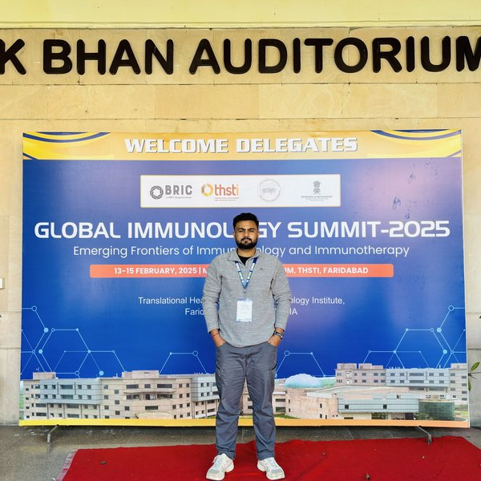
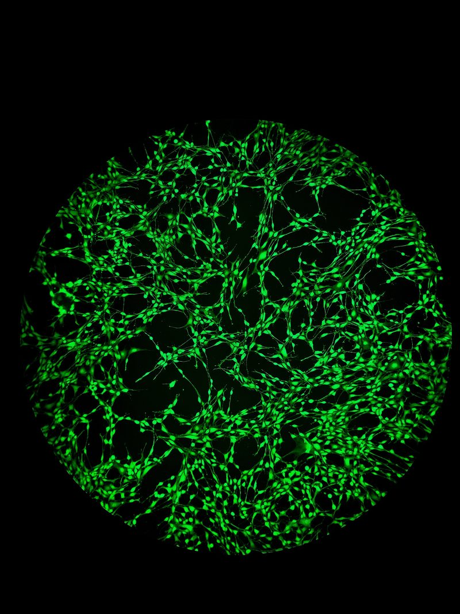
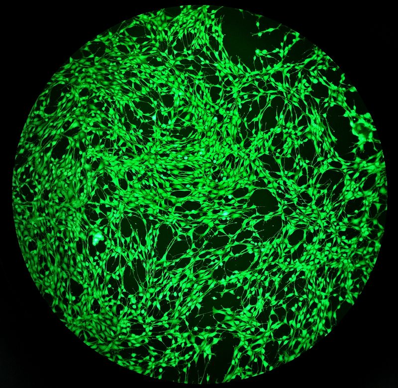
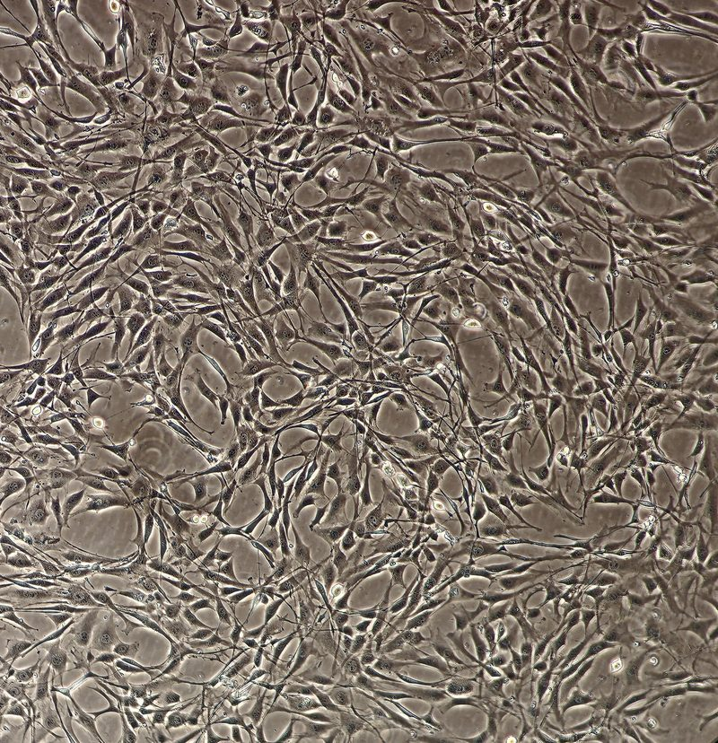
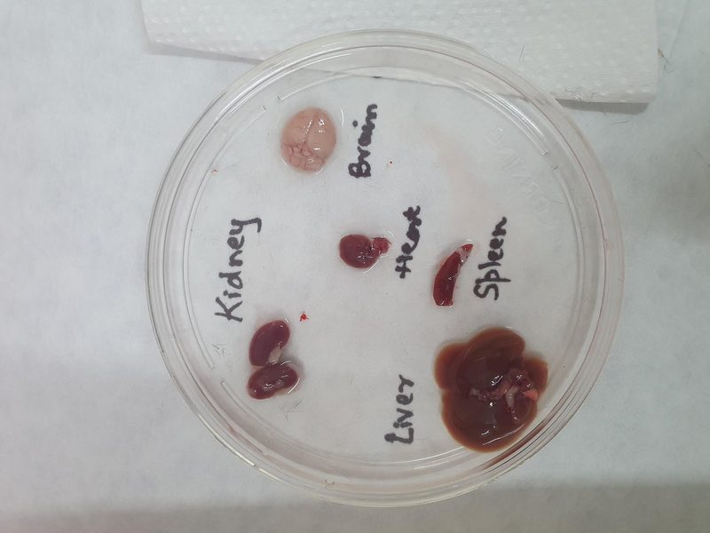
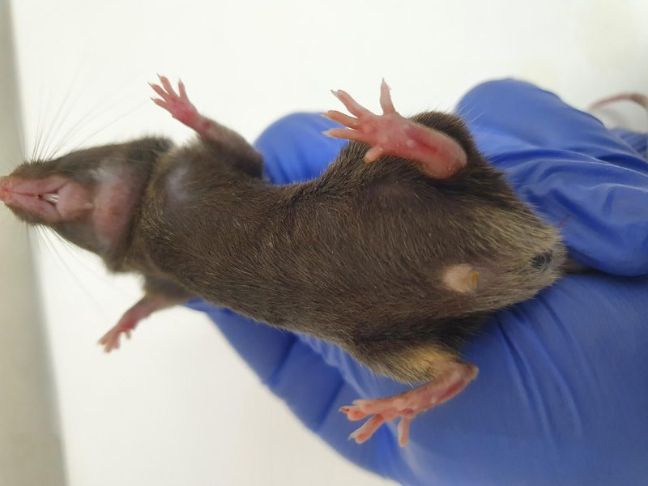

I investigate how microbial metabolites from the gut microbiome drive neuroinflammation and contribute to neurodegenerative diseases like Alzheimer's. Working in Dr. John Kirby's laboratory, I combine mechanistic in vitro models with translational animal studies to bridge microbiome science with neurobiology.

My scientific path began with a fascination I couldn't quite name — an instinct that some of the most consequential biology happens not inside the neuron, but in the metabolic and immunological environment surrounding it. That intuition eventually crystallized into a research focus: understanding how the microbial ecosystem of the gut communicates with, and in many cases dysregulates, the central nervous system.
I completed my B.Sc. in Life Sciences at Sri Aurobindo College, University of Delhi, followed by an M.Sc. in Zoology from Chaudhary Charan Singh University. My early research at the National Institute of Immunology, New Delhi, introduced me to the gut–brain axis — where I studied the therapeutic effects of Triphala formulation on Alzheimer's disease in 5XFAD mice through gut microbiota modulation.
I then spent over two years at the Translational Health Science and Technology Institute (THSTI), Faridabad, working on soft tissue bioengineering and monoclonal antibody development against drug-resistant Klebsiella pneumoniae. These experiences sharpened my skills across immunology, cell biology, animal modeling, and translational research.
I am currently pursuing my PhD in the Department of Microbiology & Immunology at the Medical College of Wisconsin under Dr. John Kirby, investigating how bacterial secondary metabolites influence neurodegenerative disease pathogenesis through the gut–brain axis.
The bidirectional communication network connecting the enteric nervous system, gut-associated immune tissue, and the CNS via the vagus nerve, circulating immune mediators, and microbiome-derived metabolites. I study how defined perturbations in microbial communities alter the biochemical and immunological landscape accessible to the brain using ex vivo intestinal models and in vivo mouse systems.
Short-chain fatty acids (butyrate, propionate, acetate), secondary bile acids, and tryptophan metabolites are potent signaling molecules that cross into circulation, engage receptors on immune cells and neurons, and modulate neuroinflammatory transcriptomes. I use primary microglia/astrocyte cultures and targeted metabolomics to map these metabolite–pathway interactions.
Alzheimer's disease is characterized by neuroinflammation, amyloid-β aggregation, and tau hyperphosphorylation — processes modulated by peripheral immune inputs. Understanding which microbial metabolites amplify these cascades opens doors to microbiome-targeted interventions, from rationally designed probiotics to metabolite supplementation therapies.

GFP-labeled cells on nanofiber scaffold — cell viability assay

Fluorescent live-cell imaging on bioengineered membrane

Mesenchymal stem cell culture — morphology assessment

Murine organ harvest — kidney, brain, heart, liver, spleen

Murine model handling — in vivo experimental procedures
DNA/RNA/Protein Isolation, PCR, RT-qPCR, SDS-PAGE, Western Blotting, ELISA, CRISPR-Cas9, Plasmid Cloning
2D/3D Cell Culture (HepG2, iPSCs, hMSCs, 3T3-NIH), Organoid Culture, Immunofluorescence, Confocal Imaging, Flow Cytometry, TEER Assays
Microglial Activation Assays (M1/M2), T Cell Isolation, Cytokine Profiling (Luminex), Multiplex Assays, Complement Pathway Assays
C57BL/6, 5xFAD, APP/PS1 — Genotyping, Gavage, IP/IV Injection, FMT, Morris Water Maze, Y Maze, Rotarod, Open Field, Novel Object Recognition
16S rRNA Amplicon Sequencing, Shotgun Metagenomics, SCFA/Bile Acid Quantification (GC-MS, LC-MS/MS), Anaerobic Microbiology
R (phyloseq, vegan, DESeq2, ANCOMBC2, MaAsLin2, ggplot2), Python (basic), QIIME2, GraphPad Prism, ImageJ, SLURM
Dept. of Microbiology & Immunology
Uttar Pradesh, India · Grade: 7.72
New Delhi, India · Grade: 8.10
I welcome conversations with researchers, clinicians, and industry scientists whose work intersects with the gut–brain axis, microbiome biology, neuroinflammation, or neurodegenerative disease. Whether you're interested in a potential collaboration, discussing complementary methodology, or simply exchanging ideas — please reach out.
I am also happy to connect with students or early-career researchers interested in this area of science.